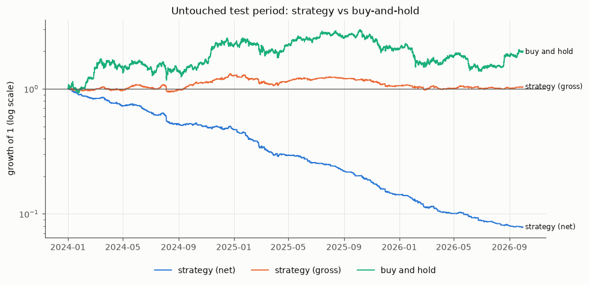

Question. Can information available at time t predict the direction of the next 60-minute BTCUSDT return out of sample, well enough to beat no-skill and make money after realistic trading costs? Answer: the direction is slightly but robustly predictable; the edge is far too small to pay for trading it.
Binance Vision spot BTCUSDT 1-minute candles, 17 Aug 2017 – 30 Sep 2026: 4,789,279 rows from 110 monthly files, every one SHA-256 verified; ETHUSDT and perpetual funding rates as secondary data. The audit found no duplicates or impossible candles, 0.63% missing minutes (none in 2024–26), Binance's 2025 switch from millisecond to microsecond timestamps, and 21,602 candles shifted 20.8 s / 14.8 s off the minute. Those were treated as missing, because snapping them to the grid would leak future seconds into "closed" features.
A short-term reversal: after a rise, the next hour is slightly more likely to be weaker. It replicated on ETHUSDT with no re-tuning (AUC 0.546). Accuracy was 53.5% against a 50.5% base rate, but mean next-hour returns across probability deciles span only −1.3 to +1.9 bp.
| Strategy | Buy & hold | |
|---|---|---|
| Cost model | 7 bp/side (5 bp fee + 1 bp spread + 1 bp slippage, last two assumed) + actual funding | |
| Net return | −92.2% | +97.6% |
| Net / gross Sharpe | −5.84 / 0.16 | 0.76 |
| Max drawdown | −92.3% | −53.7% |
| Time in market; round trips/yr | 9.1%; 667 | 100% |

23 pre-specified variants (thresholds, feature removal, model swap, 0/5-min execution lag, shifted hours, 15/30-min horizons): AUC 0.534–0.548 in every one, net Sharpe negative in every one. Only zero costs are profitable; a spot-fee variant gives −9.86. Daily 99% VaR 3.53% vs 2.18% under normality; rolling VaR passes Kupiec (p = 0.42, 0.60); 5,000 block-bootstrap years: none profitable. AUC fell from 0.567 (2024H2) to 0.532 (2026H2) as volatility features drifted (PSI up to 3.5).
Hypothesis testing with pre-registered pass/fail criteria · ML that turns probabilities into positions and costed trades · scepticism toward backtests (leakage test, purged walk-forward, one test run, every trial logged) · messy multi-million-row crypto data · understanding why a signal fails and decays. Not covered: prediction-market order books or fills, on-chain/wallet data, SQL/Polars, live trading.